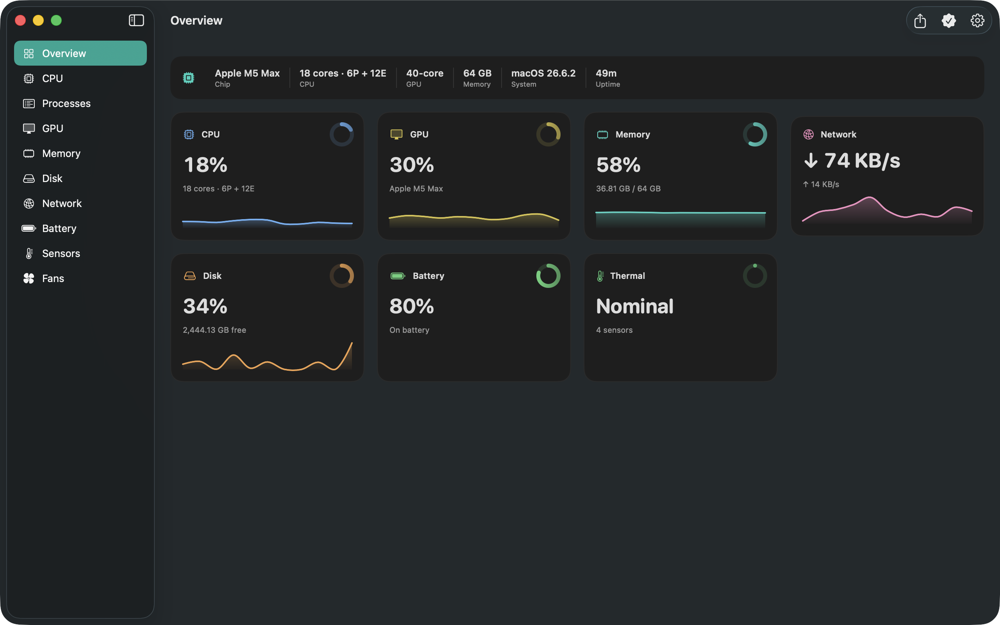
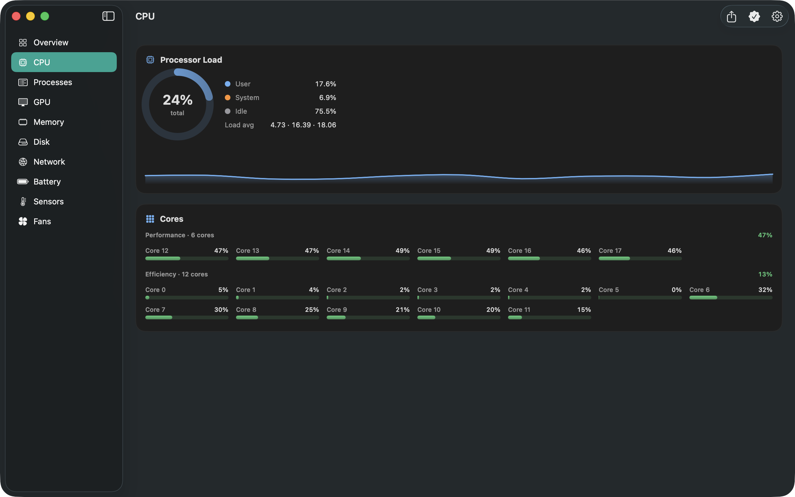
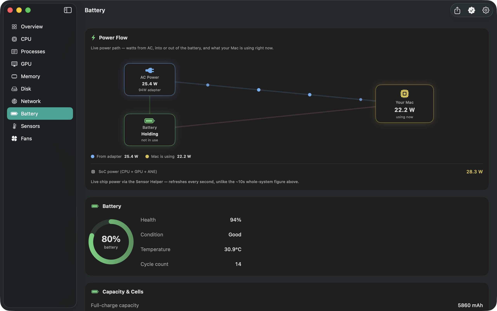

See where the work is.
Check CPU load and memory pressure while you build, edit or browse. Pro adds per-core load, memory breakdowns and a searchable process table.
See what’s busy, what’s running low, and what’s changing. Live system readings in your menu bar, with a dashboard when you want a closer look.
Free download · Optional Pro purchases · macOS 14 or later

LESS GUESSING. MORE CONTEXT.
Check CPU load and memory pressure while you build, edit or browse. Pro adds per-core load, memory breakdowns and a searchable process table.
Choose CPU, memory or battery for your free menu-bar readout. Pro lets you show more metrics and set their order.
See battery level and charging state for free. On supported Macs, Pro adds battery health, cycle count and the live power-flow diagram.
START WITH THE ESSENTIALS
Try the everyday readings for free. Choose Pro when detailed monitoring becomes part of your workflow.
Lifetime is a one-time purchase. Subscriptions renew automatically until cancelled. Your local price and any eligible trial appear in the app before purchase.
Download, then explore Pro ↗CPU/GPU temperatures, fan readings and SoC power need both Pro and the free Corynx Sensor Helper. Available readings depend on your hardware. Fan control also requires the separate Fan Helper.
INSIDE CORYNX PRO


Includes Pro features. Sensor and fan features require the relevant helpers.
YOUR FIRST USEFUL CHECK
Check CPU load and memory pressure while doing your usual work. No account or helper is needed for these readings.
Open Settings → Menu Bar and pick CPU, memory or battery. The readout keeps updating when you close the dashboard.
Open a module to see its Pro features. Use the membership screen to compare Monthly, Annual and Lifetime.
A FEW GOOD QUESTIONS
Yes. The free readings and one menu-bar metric work without a subscription. For Pro, choose Monthly, Annual or a one-time Lifetime purchase. You can close the upgrade screen and keep using the free app.
Not for CPU, memory, disk, network, battery or thermal-pressure readings. CPU/GPU temperatures, fan speeds and SoC power require Pro and the separately installed, free Sensor Helper. Sensor availability varies by Mac.
Corynx shows readings so you can investigate your workload. Its own resource use varies with your Mac and refresh settings; use a slower refresh interval if you want less frequent sampling. It does not automatically clean memory or guarantee a performance improvement.
Open the membership screen using the crown button or Upgrade to Pro. Choose Restore Purchases when using the Apple Account that bought Pro. Manage subscriptions there or in your Apple Account’s subscription settings. Lifetime does not renew.
These Pro tools require compatible hardware and the separate Fan Helper. Dust Guard is a supervised attempt to keep fans stopped while conditions allow; Corynx reports measured speed, and a stop is not guaranteed. Read the fan-control setup and safety guide before use.
System metrics are read locally and are not sent to a server. There is no Corynx account and no advertising. Diagnostic usage counters are stored locally and are not sent automatically. See our privacy policy.
There is a separate Corynx app for iPhone and iPad, with features suited to those platforms. The Mac and iOS apps have separate Pro purchases.
Email mwsupplylimited@gmail.com with your Mac model, macOS version, Corynx version and what happened. Please leave out passwords and other private information.
A LITTLE MORE VISIBILITY
Free download. Pro is optional.